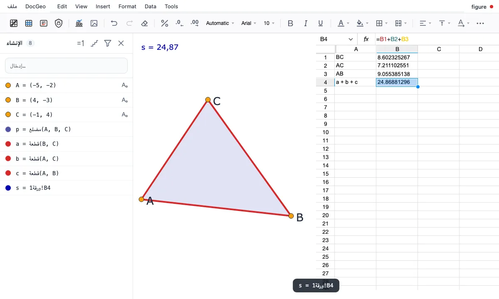

جدول البيانات
يمكن أن تحتوي علامة تبويب في DocGeo على ورقة من DocCells، جدول بيانات DocTools: بجانب الشكل، أو وحدها في علامة تبويبها الخاصة. ويقرأ الشكل والخلايا كل منهما الآخر، مباشرة.

في المثال أعلاه:
-
تقرأ الخلايا من B1 إلى B3 أطوال أضلاع المثلث a وb وc:
=GEO("a")…؛ - تجمعها B4:
=B1+B2+B3؛ -
ويعيد الشكل قراءة هذا المجموع بالسطر
s = !B4.
عند سحب A أو B أو C، تتبع الخلايا وs الحركة
أثناءها.
إضافة جدول بيانات
| الإجراء | الطريقة |
|---|---|
| بجانب الشكل | ملف › العرض › عرض جدول بيانات جديد: عمود إضافي، على اليمين، فيه ورقة فارغة؛ وتأخذ الأعمدة العرض نفسه (عروض متعددة) |
| في علامة تبويبه الخاصة | ملف › علامة تبويب جدول بيانات جديدة: علامة تبويب «جدول1»، «جدول2»…، لا تحتوي إلا على ورقة (المصنفات) |
| تغيير الحجم، النقل | اسحب الفاصل بين الأعمدة؛ ملف › العرض › نقل العرض إلى اليسار أو إلى اليمين، عندما يكون عرض جدول البيانات نشطًا |
| الحذف | ملف › العرض › حذف عرض جدول البيانات: يختفي العرض وخلاياه، ويستعيد الشكل مكانه. وتُحذف علامة تبويب جدول البيانات كأي علامة تبويب. |
- لعلامة التبويب عرض جدول بيانات واحد على الأكثر: يكون عرض جدول بيانات جديد معطّلًا إذا كان فيها عرض بالفعل.
- يعرض عرض جدول البيانات ورقة واحدة، بلا علامات تبويب للأوراق. وللعمل على عدة أوراق، تُنشأ عدة علامات تبويب لجداول البيانات، يقرأ بعضها بعضًا (انظر أدناه).
- يمكن التراجع عن إضافة عرض جدول بيانات أو حذفه، مثل الإجراءات الأخرى على العروض.
قوائم جدول البيانات وأزراره
تجعل نقرة أو ضغطة مفتاح في الخلايا عرض جدول البيانات نشطًا. فتُفسح أشرطة DocGeo المجال لأشرطة جدول البيانات، بالارتفاع نفسه: لا يتحرك شيء تحتها.
- يحتفظ شريط القوائم بـ ملف، تليه قائمة DocGeo، ثم قوائم جدول البيانات.
- يحلّ شريط أزرار جدول البيانات (تنسيق الأعداد، الخط، الغامق، الألوان، الحدود، المحاذاة…) محلّ شريط إجراءات DocGeo.
- تقدّم قائمة DocGeo ما يبقى مفيدًا: سجل الإنشاء، لوحة الأدوات، الخصائص، ودليل الاستخدام.
- تعود أشرطة DocGeo بنقرة في الشكل أو في لوحة «الإنشاء»، أو بكتابة سطر فيها، أو بتغيير علامة التبويب. وفي علامة تبويب جدول بيانات، تبقى أشرطة جدول البيانات.
- يغطي مربع حوار من جدول البيانات (التنسيق الشرطي، تنسيق الأعداد…) نافذة DocGeo كلها بستار حتى يُغلق.
تبقى لوحة «الإنشاء» متاحة في علامة تبويب جدول البيانات (DocGeo › سجل الإنشاء): يُحسب العنصر المكتوب فيها دون أن يُرسم، ويمكن لخلايا علامة التبويب تلك قراءته.
عندما يكون DocGeo مضمّنًا في صفحة أخرى، مثل DocTools، لا يكون له شريط قوائم: يحتفظ جدول البيانات بأشرطته أعلى عموده.
الشكل يقرأ الخلايا
تشير صيغة من الشكل إلى خلية من عرض جدول البيانات في علامة التبويب
بعلامة تعجب يليها عنوان الخلية: !B3.
| الكتابة | القيمة |
|---|---|
!B3 |
الخلية B3 |
!B2:B21 |
نطاق من صف واحد أو عمود واحد: قائمة قيم |
!A1:C3 |
مستطيل: قائمة صفوف، كل منها قائمة |
جدول1!B3 |
الخلية B3 من علامة تبويب جدول بيانات |
'الشكل 1'!!B3 |
الخلية B3 من عرض جدول البيانات في علامة تبويب أخرى |
A = (!B1, !B2)
r = !B3
L = !A1:A10-
يُكتب العنوان بحروف كبيرة ثم أرقام (
B3،AA12)، بلا$، بعد علامة التعجب مباشرة. ويُكتب نفي عنصر اسمه A1 هكذا:!(A1). -
يُقرأ العدد أو النص أو القيمة المنطقية أو القائمة كما هي؛
ويُقرأ التاريخ عددًا. وتحتوي الخلية على قائمة تُكتب بين
قوسين معقوفين،
[2, 1]، أو محسوبة:=[2, 1]*3. وتعطي الخلية الفارغة أو التي فيها خطأ (#DIV/0!…) قيمة غير معرّفة: لا يُرسم العنصر الذي يقرؤها. - بمجرد أن تتغير خلية، بالكتابة أو بحساب الجدول، يُعاد حساب العناصر التي تقرؤها ورسمها.
- المرجع ليس إلا جزءًا من صيغة: لا ينشئ أي عنصر. والنقطة المقروءة من الخلايا، مثل A أعلاه، محسوبة: لا تُسحب بالفأرة. ولتحريكها، تُغيَّر الخلايا.
خلايا علامة تبويب أخرى
يأتي اسم علامة التبويب أولًا، بين علامتي اقتباس مفردتين إن كان
فيه مسافة أو رمز، كما في
قراءة علامة تبويب أخرى:
جدول1!B3. وإن كان في علامة التبويب هذه شكل أيضًا،
تُضاعف علامة التعجب، 'الشكل 1'!!B3، لأن
'الشكل 1'!B3 يشير إلى العنصر B3 من شكلها. وتُقرأ
خلاياها كما كانت محسوبة عند مغادرة علامة التبويب تلك.
الخلايا تقرأ الشكل: GEO
في خلية، تقرأ الدالة GEO قيمة عنصر من الشكل، يُشار
إليه باسمه بين علامتي تنصيص.
=GEO("c")
=GEO("'الشكل 1'!c")
=2*GEO("r")+1- القيمة هي التي تقرؤها صيغة من الشكل بتسمية العنصر: طول قطعة مستقيمة، قيمة تعبير أو منزلقة، نص، حالة خانة اختيار… وهي تتبع الشكل أثناء معالجته.
-
تُقرأ النقطة قائمةً من إحداثيتيها:
=GEO("A")تعطي[1, 2]، ويُحسب بها كما بقائمة:=GEO("A")*2. -
يعطي العنصر المجهول أو غير المعرّف، أو الذي ليس عددًا ولا نصًا ولا قيمة منطقية ولا نقطة ولا
قائمة،
#N/A. ويجب أن يُكتب الاسم في الصيغة:=GEO(A1)تعطي#VALUE!. -
تقرأ
GEO("'الشكل 1'!c")العنصر c من علامة تبويب أخرى: هكذا تقرأ علامة تبويب جدول بيانات شكلًا. -
للدالة
GEOالاسم نفسه في كل اللغات. ولا توجد إلا في DocGeo: في DocCells وحده، تعطي#N/A.
مرجع دائري
لا يمكن لعنصر تقرؤه GEO أن يعتمد على خلية تعتمد
عليه. إذا كانت A1 تحتوي على
=GEO("m")+1، فإن إعادة تعريف m بالسطر
m = !A1 تُرفض: «مرجع دائري: !A1».
وكذلك تُلغى صيغة خلية قد تُغلق حلقة مع الشكل بهذه الرسالة، وتستعيد الخلايا محتواها السابق. وفي ملف يحتوي رغم ذلك على حلقة، تكون القراءة التي تُغلقها غير معرّفة.
التراجع والحفظ
- للخلايا تراجعها الخاص: Ctrl Z في الخلايا، أو قوائم جدول البيانات. ولا يلغي زرا في DocGeo ما كُتب في جدول البيانات.
-
تُحفظ الخلايا وصيغها وتنسيقها مع الشكل، في ملف
.dgoنفسه. ويحفظ Ctrl S في الخلايا، أو ملف › حفظ، كل شيء.
للتلاميذ
يعرض قارئ DocGeo، مثل شكل مضمّن في صفحة ويب، الورقة بلا قوائمها ولا أزرارها، مع شريط الصيغة.
- يمكن للتلميذ الكتابة في الخلايا، كما في حقل إدخال: ويتبعها الشكل.
- يعيد زر إعادة التعيين الخلايا كما حُفظت.
- هذه الكتابات ليست جزءًا من إجابة التلميذ التي تحتفظ بها صفحة تضمّن الشكل: فقط عناصر الشكل.
جدول البيانات تطبيق مستقل، لا يُحمَّل إلا إذا كانت علامة التبويب
المعروضة تحتوي عليه. وفي موقع يستضيف نسخته الخاصة من DocGeo، يجب
نشر المجلد doccells بجانب مجلد DocGeo؛ وإلا يعرض
عرض جدول البيانات «⚠ DocCells»، ويعمل باقي الشكل.